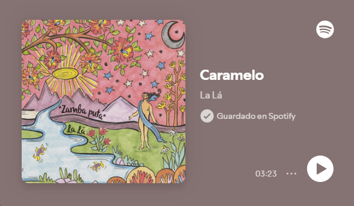
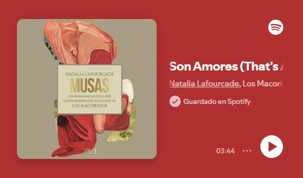
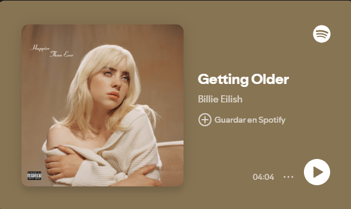

canciones favoritas
cancion 1:

-Caramelo-
-La Lá-
Está por acabar mi amor por mí
No puedo respirar si te tengo aquí
Y si me miras tan dulce que me hieres los poros
Cuando me miras tan dulce que me hieres los poros
Y si la cosa es como es
Debo decir
Que tú para mí me das igual
Y si la cosa es como es
Debo decir
Que tú para mí me das igual
Miedo y caramelo hasta las lágrimas de caramelo
Sólo tengo que ocultarte que te tengo miedo
Y que sueño con tus sábana'-sábana'-sábanas
Miedo y caramelo hasta las lágrimas de caramelo
Sólo tengo que ocultarte que te tengo miedo
Y que sueño con tus sábana'-sábana'-sábanas
Y si me miras tan dulce, que me hieres los poros
Cuando me miras tararararán dulce que me hieres los poros
Y si la cosa es como es
Debo decir
Que tú para mí me das igual
Miedo y caramelo hasta las lágrimas de caramelo
Sólo tengo que ocultarte que te tengo miedo
Y que sueño con tus sábana'-sábanas
cancion 2:

-Son Amores-
-Natalia Lafourcade-
Cuando sientas como un palpitar, corazón
Son amores
Si al mirarme sientes emoción, corazón
Son amores
Sonarán, din-dan din-dan
Repicar de campanas
Que dirán, dan-din dan-din
Que tu amor por mi aguarda
No pretendas más tiempo callar y ocultar tus amores
Si total yo también te he de amar con toda mi pasión
Y verás que al fin se unirán nuestros dos corazones
Y en un beso febril fundirán de una vez dos amores
Y verás que al fin se unirán nuestros dos corazones
Y en un beso febril fundirán de una vez dos amores
cancion 3:

-Getting Older-
-Billie Eilish-
Estoy envejeciendo, creo que estoy envejeciendo bien
I'm gettin' older, I think I'm agin' well
Ojalá alguien me hubiera dicho que estaría haciendo esto sola
I wish someone had told me, I'd be doin' this by myself
Hay cosas que aprecio, hay mucho por lo que estoy agradecida
There's reasons that I'm thankful, there's a lot I'm grateful for
Pero es diferente cuando siempre hay extraños esperando en tu puerta
But it's different when a stranger's always waitin' at your door
Lo cual es irónico, porque los extraños parecen quererme más
Which is ironic, 'cause the strangers seem to want me more
De lo que nadie ha querido antes (nadie ha querido antes)
Than anyone before (anyone before)
Es una lástima que, por lo general, sean trastornados
Too bad they're usually deranged
La semana pasada, me di cuenta de que quería que se apiedaran de mí
Last week, I realized I crave pity
Cuando vuelvo a contar una historia, hago que todo suene peor
When I re-tell a story, I make everything sound worse
No puedo deshacerme de la sensación de que no sé superar
Can't shake the feeling, that I'm just bad at healing
Y, tal vez, esa es la razón por la que cada frase suene ensayada
And maybe that's the reason every sentence sounds rehearsed
Lo cual es irónico, porque cuando fui deshonesta
Which is ironic, because when I wasn't honest
Aun así era ignorada (mintiendo para llamar la atención, solo para que me descuiden)
I was still bein' ignored (lyin' for attention, just to get neglection)
Ahora estamos separados
Now we're estranged
Cosas que una vez disfruté
Things I once enjoyed
Solo me mantienen empleada ahora
Just keep me employed now
Cosas que anhelo
Things I'm longing for
Algún día me aburriré de ellas
Someday, I'll be bored of
Es tan raro
It's so weird
Que nos importamos tanto, hasta que dejemos de importar
That we care so much, until we don't
Estoy envejeciendo, tengo más sobre mis hombros
I'm gettin' older, I've got more on my shoulders
Pero lo estoy haciendo mejor al admitir cuando me equivoco
But I'm gettin' better at admitting when I'm wrong
Estoy más feliz que nunca, al menos, me esfuerzo para eso
I'm happier than ever, at least, that's my endeavor
Para mantenerme bien y priorizar mi placer
To keep myself together and prioritize my pleasure
Porque, para ser honesta, solo deseaba que la palabra que prometí
'Cause to be honest, I just wished the word I promised
Dependiera de lo que estoy dando (no sin su permiso)
Would depend on what I'm givin' (not on his permission)
(No fue mi decisión) ser abusada, hmm
(Wasn't my decision) to be abused, hmm
Cosas que una vez disfruté
Things I once enjoyed
Solo me mantienen empleada ahora
Just keep me employed now
Cosas que anhelo
Things I'm longing for, hmm
Algún día me aburriré de ellas
Someday, I'll be bored of
Es tan raro
It's so weird
Que nos importamos tanto, hasta que dejemos de importar
That we care so much, until we don't
Pero la siguiente semana, espero estar en algún lugar riendo
But next week, I hope I'm somewhere laughin'
Para cualquiera que pregunte, prometo que estaré bien
For anybody asking, I promise I'll be fine
Tuve traumas, hice cosas que no quería
I've had some trauma, did things I didn't wanna
Tenía demasiado miedo de decirles, pero, ahora, creo que es el momento
Was too afraid to tell ya, but now, I think it's time